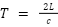
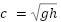
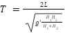

, and the height is given by
, and the height is given by  . This makes the seiche period equal to
. This makes the seiche period equal to Stratified Flow
Susan Beale and Jamie Daniel
Spring 2023
Abstract
In this lab, the dead water effect and the seiche period of a stratified fluid were explored. The dead water effect was looked at to see if internal waves could be generated by moving a “boat” along the fluid. The seiche period was found using a lock exchange system with two different density fluids. Five different density differences were used to see how a change in density of one of the fluids affects the period. The experimental and theoretical results followed the same curve with the experimental periods being slightly larger than the theoretical periods.
Dead Water Effect
The “dead water” effect was first observed by ships travelling through Norwegian fjords, where fresh glacial water runs off into the ocean and sits in a thin layer above the salty ocean water. Ships travelling through these waters would experience unusually high drag and slow down. The movement of the ship displaces water and generates internal waves between the interface of the two stratified layers. The formation of internal waves converts the ship’s kinetic energy into wake potential energy. This wake potential energy is a wave-making drag that is generated due to the propagation of the internal waves, ultimately slowing the ship down. Two wave-making drags are observed. Nansen wave-making drag generates a stationary internal wake, producing a drag that results in the boat moving at a constant low speed. Ekman wave-making drag creates velocity oscillations that also work to slow the ship down. It is also observed that while internal waves propagate at the interface of the two layers, there is no movement at the air-sea interface.
Figure 1: Diagram of the “dead water” effect (Cohen, Ira. M, et al, 2007)
Procedure:
To simulate the “dead water” effect in the lab, we first filled the tank with two layers of water of different densities. The top layer was fresh water that was dyed yellow, and the bottom layer was salty water that was dyed blue. The fresh water was added first and the salty water was then poured into the bottom of the tank using a funnel. This method was used to minimise the amount of mixing between the two fluids. A “boat” was made out of a piece of foam and pulled through the water using a string. We chose to pull the boat with a string rather than push it with our hands to limit the amount of movement in the vertical direction. Below is a recording of one of our attempts.
Seiche Period/Lock Exchange
The second demonstration was a lock exchange used to visualise a seiche period. A seiche is a standing wave that can be generated in any enclosed body of water like a fjord or in a lock exchange. In a fjord, winds or earthquakes can displace water from one end of the enclosed body of water to the other end. The water will then oscillate back and form a standing wave. The wave equation boundary conditions for this standing wave is that the velocity at both ends is equal to zero. The period of a wave is given by,

where  is the wave speed, and L is the length of the container. In this lab, two different fluids of different density were used to demonstrate a seiche period. Because of the density difference, a modified gravity and height was used. The reduced gravity is given by , and the height is given by . This makes the seiche period equal to
 . The figure below shows a simulation of a lock exchange with the denser fluid underneath.
Figure 2: Lock Exchange With Two Densities (Ooi, 2006)
Procedure:
A barrier was put into the tank at the halfway mark. One litre of water had salt added to it, while another litre of water was left as tap water. Both fluids were poured into the tank, one on each side of the barrier. Then the barrier was taken out and the denser fluid moved underneath the lighter fluid. The denser fluid was timed until it hit the wall of the container. This time was then multiplied by 4 to get the period of one oscillation. The experiment was repeated for 3g,5g,7g,10g, and 15 g of salt to see how a larger density difference affects the seiche period. Since the amount of water being used was 1L, the salinity is equal to the density where the salinity is 3g/L, etc. The length of the tank was 79cm and the heights of the density layers were 1.75cm for both densities. The density of water was 0.997g/cm^3.
Table 1: Experimental Values and Results
Mass Salt [g] | Density Difference [g/ cm^3] | Experimental Period [s] | Theoretical Period [s] |
3.00 | 0.00234 | 140 | 111.5 |
5.00 | 0.0039 | 96 | 86.44 |
7.00 | 0.00546 | 80 | 73.11 |
10.0 | 0.0078 | 73 | 61.23 |
15.0 | 0.0117 | 52.00 | 50 |
Figure 3: Experimental and Theoretical Period vs Density Difference
Discussion
For the “dead water” effect, as the boat moved through the water, internal waves were generated and were visible, especially when the video was slowed down. We also tried pulling the end of a wooden ruler through the water (this was seen in the stratified flow video from the National Committee for Fluid Mechanics Films). The internal waves were also visible using this method and the drag effect was also felt as the ruler was pulled through the water. The speed the boat was pulled at also seemed to impact the generation of internal waves; at slower speeds the effect was more visible, while at faster speeds, the two layers just seemed to get mixed.
For the lock exchange portion of the demo, the experimental and theoretical results followed the same general curve. The period in both cases increases with increasing density difference. The experimental periods are larger than the theoretical ones. This could be due to friction along the bottom and the sides of the tank that would be slowing the fluid down. After the divider is lifted, the water stays stationary for a moment before it begins to move. This is very visible when the density difference between the two layers is smaller and so more error is more likely in lower density differences. Only one quarter of the period was timed due to the wave dying out before it completed half a wavelength. Therefore, the one quarter period was multiplied by four to get to the full period. If more water was used it may have been more visible and the entire period may have been seen.
A playlist with videos taken during this lab: https://www.youtube.com/playlist?list=PLHud3YEe96vvBunM7iPaVnk4vBZNUtDgQ
Hints
“Dead water” effect:
Seiche Period/Lock Exchange:
References
Ooi, Seng Keat. (2006). High resolution numerical simulations of lock-exchange gravity-driven flows. Theses and Dissertations. https://www.researchgate.net/publication/30011744_High_resolution_numerical_simulations_of_lock-exchange_gravity-driven_flows
Cohen, Ira M., et al. Fluid Mechanics, Elsevier Science & Technology, 2007. ProQuest Ebook Central, https://ebookcentral.proquest.com/lib/uvic/detail.action?docID=534929.
Fourdrinoy J, Dambrine J, Petcu M, Pierre M, Rousseaux G (2020) The dual nature of the dead-water phenomenology: Nansen versus Ekman wave-making drags. Proc. Natl Acad Sci 117(29):16770–16775. https://doi.org/10.1073/pnas.1922584117